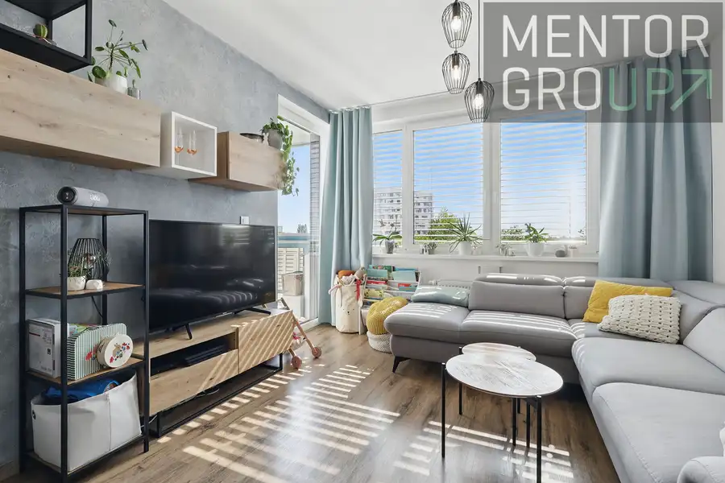
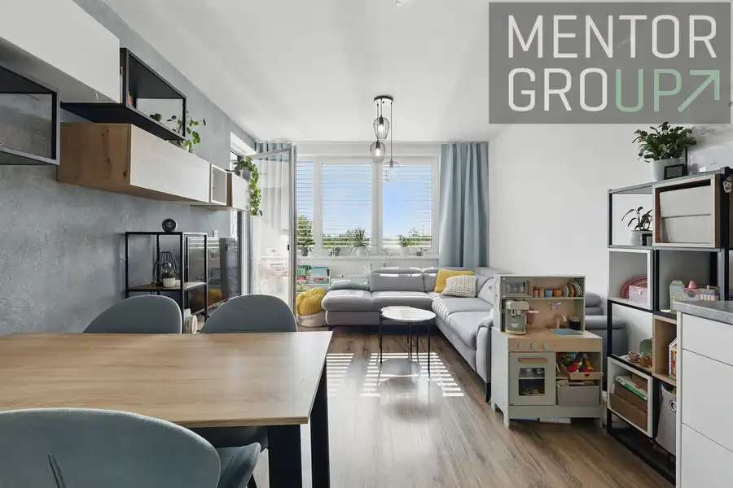
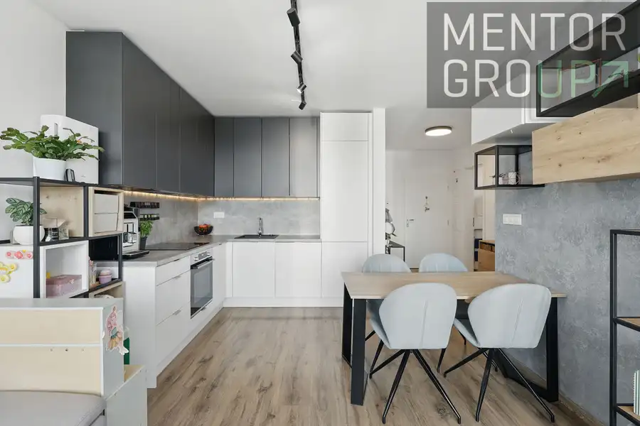
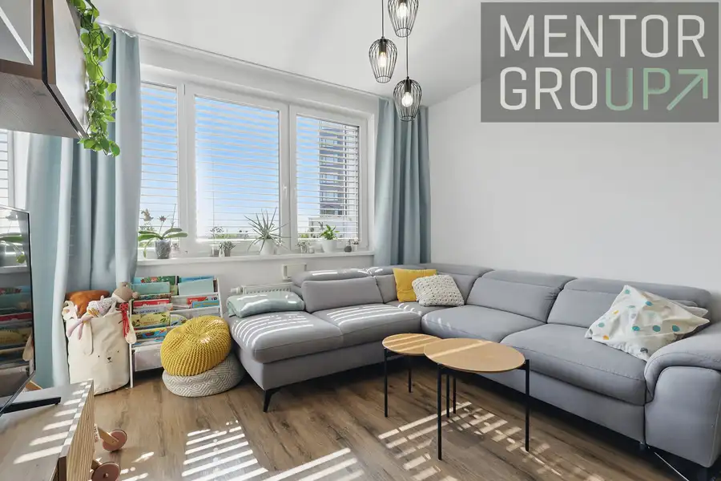
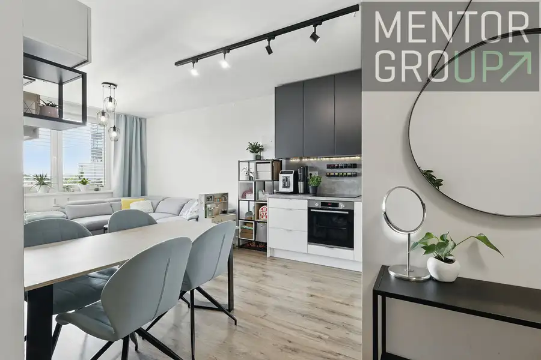
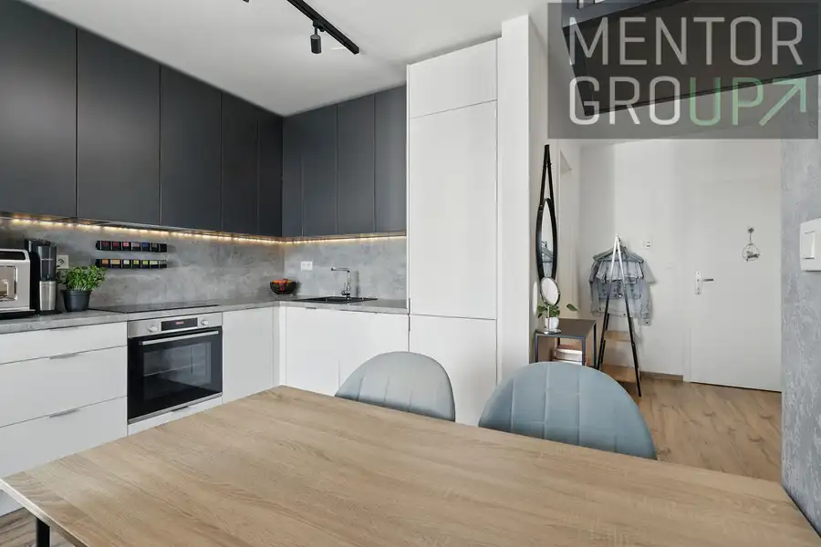
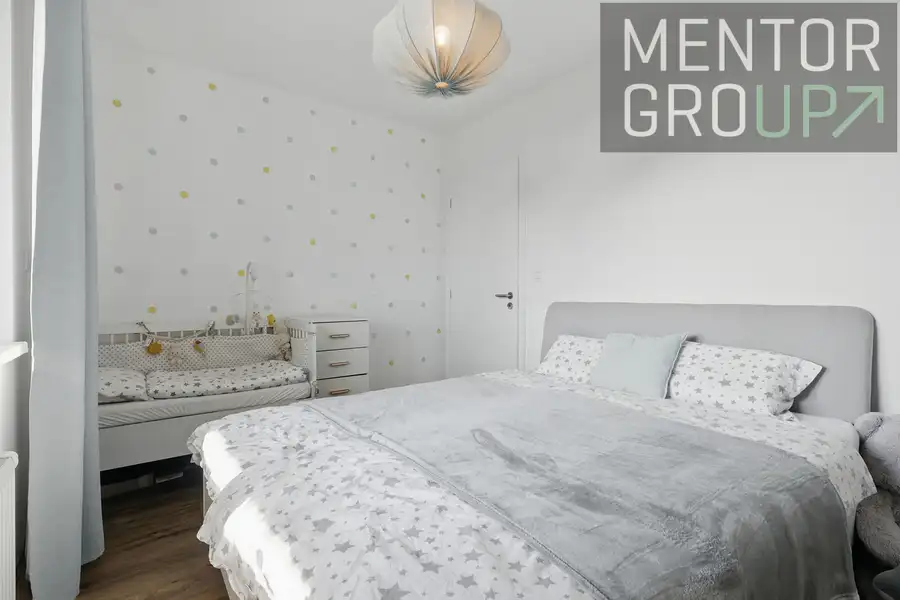
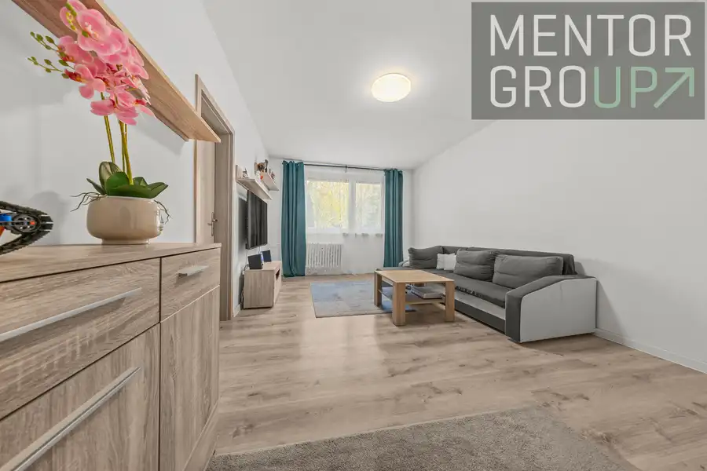
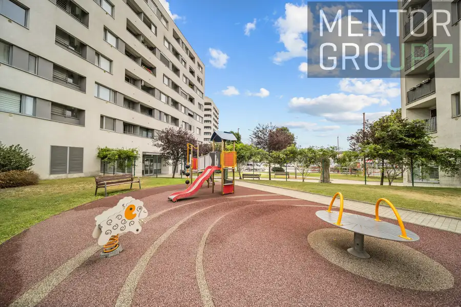
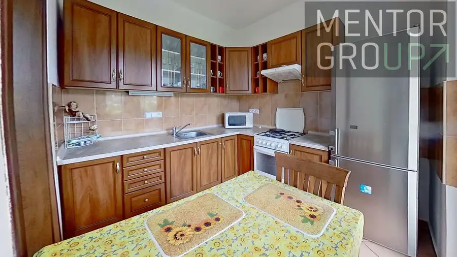

Na predaj štýlový 2-izbový byt v novostavbe – Malokrasňanská ulica, Rača, Bratislava
Rača, Bratislava







- Dispozícia2-izbový
- Plocha52.43 m²
- Poschodie3. z 5
- StavNovostavba
- VlastníctvoOsobné
O nehnuteľnosti
Ponúkame na predaj krásny a moderne zariadený 2-izbový byt v novostavbe v obľúbenej a pokojnej časti Bratislavy – Rača, Malokrasňanská ulica.Byt sa nachádza v tichej lokalite s množstvom zelene a detských ihrísk, ideálny pre mladé páry alebo rodiny s deťmi, ktoré hľadajú pohodlie, súkromie a dobrú dostupnosť.Základné informácie:Dispozícia: 2-izbový byt s modernou kuchyňou a obývačkou, samostatná spálňaVeľký balkón Podlahová plocha: 52,43 m2 ( z toho loggia 5,52 m2)Poschodie: 3/6Stav: novostavba, veľmi pekne zariadený byt – stačí sa nasťahovaťOrientácia: východParkovanie:1 kryté parkovacie miesto v garáži - za príplatok 25.000 Eur ( povinné dokúpiť k bytu)Vonkajšie parkovacie státia v spoluvlastníctve Okolie:Tiché prostredie plné zeleneDetské ihriská a bezpečné vnútroblokyKompletná občianska vybavenosť v dostupnosti (potraviny, škôlka, MHD, električka)Výhody:Novostavba – nízke náklady na bývanieByt sa predáva zariadený – vhodné aj ako investíciaParkovacie miesto v garáži a podiel na vonkajších parkovacích miestach, čo zabezpečuje komfort aj pre hostíSkvelá poloha s dobrou dostupnosťou do centra aj prírodyExteriérové žalúzieCena: 239.000 EURVirtuálnu prehliadku nájdete tu: https://my.matterport.com/show/?m=F8L8GStRvT6Uvedená cena zahŕňa všetky poplatky súvisiace s prevodom nehnuteľnosti, kompletný právny servis k prevodu vlastníckych práv k nehnuteľnosti, hypotekárny servis, atď..._____________________Róbert Hauskrecht☏ 0904 266 135robert.hauskrecht@mentorgroup.sk• Páči sa Vám prezentácia tejto nehnuteľnosti?• virtuálna prehliadka• sprostredkovanie najvýhodnejšej hypotéky na trhu• VIP servis pre každého klienta.• daňové priznanieMáte v pláne predať alebo prenajať Vašu nehnuteľnosť? KONTAKTUJTE MA a rád Vám pomôžem.
Parametre
- Cena vrátane energií
- Nie
- Druh
- 2 izbový byt
- Dátum zverejnenia
- 13. 06. 2025
- Energetický certifikát budovy
- nie je
- Podlažie
- 3
- Počet nadzemných podlaží
- 5
- Stav nehnuteľnosti
- Novostavba
- Typ
- Predaj
- Typ konštrukcie
- Tehlová
- Umiestnenie
- Vstavba podkrovia
- Vlastníctvo
- Osobné
- Zariadenie
- Zariadené kompletne
- Úžitková plocha
- 52.43 m²
Kde to je


Mohlo by Vás zaujímať

BytNové 259 900 €3-izbový byt po kompletnej rekonštrukcii v TOP lokalite – Mamateyova Petržalka, Bratislava 3-izbový69 m²2. podlažie
BytNové 349 000 €Veľký 3-izbový byt 92 m² + 2 balkóny | novostavba | kazanská 1B | garáž Podunajské Biskupice, Bratislava 3-izbový91.75 m²6. podlažie
BytNové Cena na vyžádáníPRENÁJOM | 3-izbový byt, 61 m² + 2 BALKÓNY | Bazovského, Dúbravka Dúbravka, Bratislava 3-izbový61 m²4. podlažie